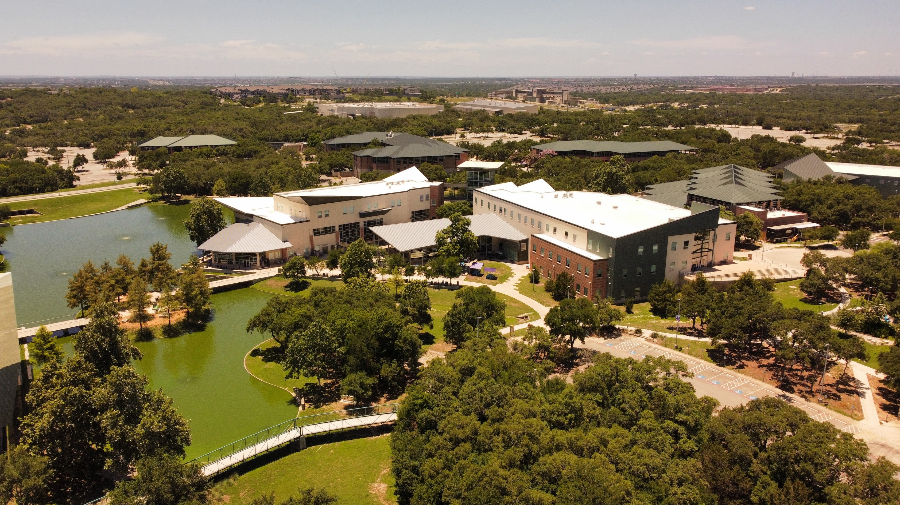
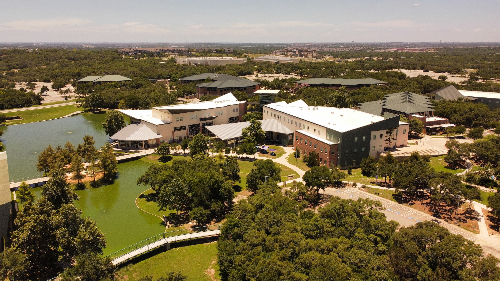

About Me
If the people who know me were to describe me in one word, it would likely be "social." I excel in collaborative environments, building strong relationships with colleagues and contributing to team success. I thrive on engaging discussions, whether diving into technical topics like the pros and cons of Java or analyzing trends in global events, showcasing my ability to think critically and adapt to diverse perspectives.
Another defining quality is my passion for learning and growth. I am currently pursuing a second bachelor’s degree in Mathematics to deepen my analytical skills and enhance my problem-solving abilities. Mathematics allows me to approach complex challenges methodically, making me adept at breaking down problems and finding efficient solutions—skills that directly translate to success in the workplace.
By combining a love for collaboration, a curious mind, and a strong analytical foundation, I bring a unique perspective and valuable contributions to any team or project.
Experience
-
Sweet Iced Tea Labs - Owner / Software Engineer
September 2023 - Present
- Design and Develop trading software for Coinbase and Bittrex using their REST APIs.
- Implment multithreading for high performance computing.
- Utilize Spring, Log4J2, Websockets, Lombok, JWT, and JSON mapping in both Java and Kotlin.
- Developed a front end Java Swing application to analyze the results of the trading software.
- Collaborated with my partner via Github Enterprise in both in person and remote settings.
-
Microsoft - Software Engineer
May 2020 - December 2024
- Developed code in PowerShell and C# for improving SharePoint services.
- Developed PowerShell scripts to automate incidents raised by the service.
- As scrum master, set up and run the daily standup, retrospective, and sprint planning meetings.
- Used tools such as Azure DevOps and git to track and check in code.
- Utilized PowerShell to maintain OneDrive and SharePoint SLA.
- Monitored multiple metrics and dashboards for worldwide service health.
-
IBM - Staff Software Engineer
July 2015 - November 2019
- Developed a leading cloud storage platform with PHP and Java.
- Resolved an executive level security issue with iSCSI connections.
- Reviewed code in Jira and Git.
- Built unit tests in partnership with other developers.
- Collaborated cross-functionally across a geographically dispersed team.
- Led daily scrum meetings as the role Scrum Master.
- Updated live server configuration files.
- Provided senior-level customer support for SmartCloud Notes, Connection Cloud, Domino Core, Watson Workplace, and Box relay globally.
- Utilized Salesforce to communicate with internal partners, direct customers, and service resellers.
- Corrected data errors using SQL statements for cloud based user management.
- Resolved code bugs in Java reported by level 2 engineers.
- Developed tools to analyze issue frequency with VB.net and PHP.
- Authored Lotus Scripts to resolve customer issues on Domino servers.
-
PIC - Software Engineer
May 2014 - April 2015
- Leveraged PHP, JavaScript, and MySQL to re-engineer a C based application to a modern web app.
- Utilized jQuery, Prototype JS, and CSS to enhance user experience.
- Developed software using MVC architecture.
Education
-
University of Texas at San Antonio
Bachelor of Science - Mathmatics
2024 - Present
-
University of Washington
Certificate in C# Programming Using .NET Core
2021
-
University of Texas at San Antonio
Bachelor of Science - Computer Science
2010 - 2014
- Cybersecurity Concentration
- Software Engineering Concentration
- 3rd place in the Center for Innovation, Technology and Entrepreneurship competition
-
Northwest Vista College
Associate of Science - Computer Science
2017 - 2010
- President of the History Club
- Vice President of the Robotics Club
- Participated in robotics competitions
- Raised money for club trips
- Organized Women's History Month
Skills
- Java
- C#
- PHP
- SQL
- C++
- PowerShell
- C
- Swift
- JavaScript
- Visual Basics
- Matlab
- Node.js
- Perl
- MySQL
- Kusto
- DB2
- Keynote
- Final Cut Pro
- OBS
- Git
- NPM
- Azure DevOps
- jQuery
- Bash
- IntelliJ
Hobbies
I am passionate about exploring new experiences and cultivating a diverse range of interests. I enjoy dancing, which not only keeps me active but also connects me to different cultural traditions and forms of self-expression. My fascination with technology extends to flying drones and working on my homelab, where I gain hands-on experience with networking, Docker containers, and Linux systems. This hobby allows me to experiment with real-world scenarios, troubleshoot complex issues, and continuously expand my technical expertise.
Gaming is another hobby I value, as it combines strategy, creativity, and moments of relaxation. I also have a deep interest in music production, where I channel my creativity into crafting unique sounds and learning about audio technology. Traveling and learning about other cultures hold a special place in my life, offering opportunities to broaden my perspective, understand different ways of life, and gain inspiration from the world around me. Each of these hobbies not only enriches my personal life but also strengthens the creativity, curiosity, and problem-solving skills I bring to my professional work.
Photography
 
